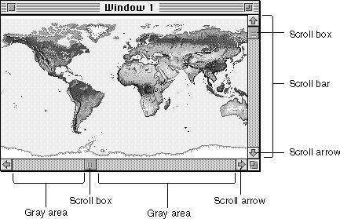
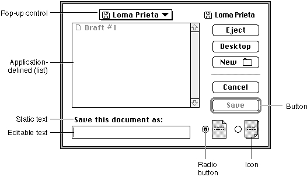

Controls
Most windows contain controls, which are screen images that the user manipulates to control the display or the behavior of the application. The most common control in a document window is the scroll bar, illustrated in Figure 4-11.
You use scroll bars to show the relative position, within the entire document, of the portion of the document displayed in the window. You should allow the user to drag the scroll box or click in the gray areas or the scroll arrows to move parts of the document into and out of the window. You activate scroll bars in a window any time there is more data than can be shown at one time in the space available.
You use the Control Manager to create, display, and manipulate the scroll bars and any other controls in your windows. Each control "belongs" to a window and is displayed within the graphics port that represents that window. For each window your application creates, the Window Manager maintains a control list, a series of entries pointing to the descriptions of the controls associated with the window.
Most alert boxes and dialog boxes contain buttons, rounded rectangles that cause
an immediate or continuous action when clicked, and most dialog boxes contain additional screen images, like radio buttons, that display and retain settings. Figure 4-12 illustrates a dialog box with buttons, radio buttons, and a number of other controls and dialog items.Figure 4-12 Controls in a dialog box

Buttons ordinarily appear only in alert boxes and dialog boxes. Most of the other elements illustrated in Figure 4-12 appear only in dialog boxes. If you use the Dialog Manager to create your alert boxes and dialog boxes, it draws your controls for you and lets you know when the user has clicked one of them. You can, however, call the Control Manager yourself to display and track buttons and other controls in any windows your application creates. You can also write your own control definition functions to create and control other kinds of controls. For a complete description of how to create and support controls, see the chapter "Control Manager" in this book.